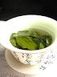
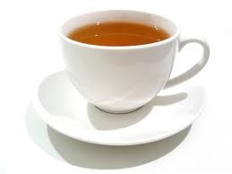

- Coffee
- Colombian
- Hawaiian
- Brazilian
- Tea
- Black tea
- Green tea
- White tea
- Coffee
- Colombian
- Hawaiian
- Brazilian
- Tea
- Black tea
- Green tea
- White tea

|
 | |
|
 | |
| Mike Jun Yang | Chiu Lim |

Coffee is a beverage prepared from roasted coffee beans. Darkly colored, bitter, and slightly acidic, coffee has a stimulating effect on humans, primarily due to its caffeine content. It has the highest sales in the world market for hot drinks. Seeds of the Coffea plant's fruits are separated to produce unroasted green coffee beans. The beans are roasted and then ground into fine particles that are typically steeped in hot water before being filtered out, producing a cup of coffee. It is usually served hot, although chilled or iced coffee is common. Coffee can be prepared and presented in a variety of ways (e.g., espresso, French press, caffè latte, or already-brewed canned coffee). Sugar, sugar substitutes, milk, and cream are often used to mask the bitter taste or enhance the flavor. Though coffee is now a global commodity, it has a long history tied closely to food traditions around the Red Sea. The earliest credible evidence of coffee drinking in the form of the modern beverage appears in modern-day Yemen from the mid-15th century in Sufi shrines, where coffee seeds were first roasted and brewed in a manner similar to current methods. The Yemenis procured the coffee beans from the Ethiopian Highlands and began cultivation. By the 16th century, the drink had reached the rest of the Middle East and North Africa, later spreading to Europe. In the 20th century, coffee became a global commodity, creating different coffee cultures around the world.

Coffee production in Colombia has a reputation for producing mild, well-balanced coffee beans. Colombia's average annual coffee production of 11.5 million bags is the third total highest in the world, after Brazil and Vietnam, though highest in terms of the arabica bean. The beans are exported to United States, Germany, France, Japan, and Italy. Most coffee is grown in the Colombian coffee growing axis region, while other regions focus on quality instead of volumes, such as Sierra Nevada de Santa Marta. In 2007, the European Union granted Colombian coffee a protected designation of origin status. In 2011, UNESCO declared the "Coffee Cultural Landscape" of Colombia, a World Heritage site. The coffee plant had spread to Colombia by 1790. The oldest written testimony of the presence of coffee in Colombia is attributed to a Jesuit priest, José Gumilla. In his book The Orinoco Illustrated (1730), he registered the presence of coffee in the mission of Saint Teresa of Tabajé, near where the Meta river empties into the Orinoco. Further testimony comes from the archbishop-viceroy Caballero y Gongora (1787) who registered the presence of the crop in the north east of the country near Giron (Santander) and Muzo (Boyaca) in a report that he provided to the Spanish authorities.
Kona coffee is the market name for coffee (Coffea arabica) cultivated on the slopes of Hualalai and Mauna Loa in the North and South Kona Districts of the Big Island of Hawaii. It is one of the most expensive coffees in the world. Only coffee from the Kona Districts can be described as "Kona." The weather of sunny mornings, clouds or rain in the afternoon, little wind, and mild nights combined with porous, mineral-rich volcanic soil create favorable coffee-growing conditions. The loanword for coffee in the Hawaiian language is kope, pronounced [ˈkope].

Tea is an aromatic beverage prepared by pouring hot or boiling water over cured or fresh leaves of Camellia sinensis, an evergreen shrub native to East Asia which probably originated in the borderlands of southwestern China and northern Myanmar. Tea is also rarely made from the leaves of Camellia taliensis. After plain water, tea is the most widely consumed drink in the world. There are many different types of tea; some have a cooling, slightly bitter, and astringent flavour, while others have vastly different profiles that include sweet, nutty, floral, or grassy notes. Tea has a stimulating effect in humans primarily due to its caffeine content.
Black tea (also literally translated as red tea from various East Asian languages), is a type of tea that is more oxidized than oolong, yellow, white and green teas. Black tea is generally stronger in flavour than other teas. All five types are made from leaves of the shrub (or small tree) Camellia sinensis, though Camellia taliensis is also used rarely.
Green tea is a type of tea that is made from Camellia sinensis leaves and buds that have not undergone the same withering and oxidation process which is used to make oolong teas and black teas. Green tea originated in China, and since then its production and manufacture has spread to other countries in East Asia.
White tea may refer to one of several styles of tea which generally feature young or minimally processed leaves of the Camellia sinensis plant. Currently there is no generally accepted definition of white tea and very little international agreement; some sources use the term to refer to tea that is merely dried with no additional processing, some to tea made from the buds and immature tea leaves picked shortly before the buds have fully opened and allowed to wither and dry in natural sun,[citation needed] while others include tea buds and very young leaves which have been steamed or fired before drying. Most definitions agree, however, that white tea is not rolled or oxidized,[citation needed] resulting in a flavor characterized as "lighter" than most green or traditional black teas.